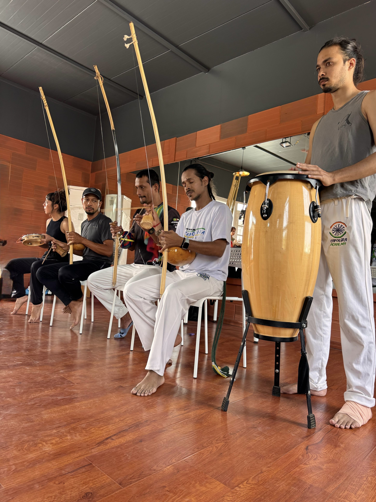

Capoeira
Capoeira is a beautiful fusion of martial art, dance, music, and culture. Born in Brazil, it’s a rhythmic game of movement, self-expression, and connection. Every kick, defense, and acrobatic flow is guided by live music, energy, and respect. Capoeira teaches not just agility or strength, but awareness, creativity, and community. It’s a space where people of all ages can discover balance—between discipline and play, body and mind. In Capoeira, we don’t just train; we celebrate life, movement, and freedom.
What is Capoeira?
Capoeira is more than a martial art—it’s a living dialogue of movement, rhythm, and expression. Practiced in a circle called the roda, two players exchange movements through kicks, defenses, and playful tricks while musicians play instruments like the berimbau and atabaque. Every gesture in Capoeira has purpose, every rhythm carries emotion.
Capoeira builds agility, coordination, balance, and self-confidence, but it also cultivates empathy and respect. It teaches us to flow with challenges instead of fighting against them. Whether you’re a child discovering movement or an adult rediscovering joy through motion, Capoeira welcomes everyone into its rhythm. It’s not just about fighting—it’s about connection, culture, and community.
Capoeira builds agility, coordination, balance, and self-confidence, but it also cultivates empathy and respect. It teaches us to flow with challenges instead of fighting against them. Whether you’re a child discovering movement or an adult rediscovering joy through motion, Capoeira welcomes everyone into its rhythm. It’s not just about fighting—it’s about connection, culture, and community.

History
Capoeira was born in Brazil over 400 years ago, created by African slaves who disguised their self-defense training as dance to protect themselves from oppression. Under the watchful eyes of their masters, they turned resistance into rhythm, struggle into song, and survival into art. Over time, Capoeira grew from the streets into a global expression of freedom, identity, and resilience.
Today, it represents unity and heritage. Through the songs, movements, and rituals passed down from one generation to another, Capoeira tells a story of courage and transformation. It reminds us that strength isn’t just in power—it’s in adaptability, creativity, and community. Every roda today is a living echo of that history, keeping the spirit of resistance and joy alive.
Today, it represents unity and heritage. Through the songs, movements, and rituals passed down from one generation to another, Capoeira tells a story of courage and transformation. It reminds us that strength isn’t just in power—it’s in adaptability, creativity, and community. Every roda today is a living echo of that history, keeping the spirit of resistance and joy alive.

Capoeira in Pune
Capoeira found its rhythm in Pune through Grupo Capoeira Brasil Pune, led by Instrutor Arrepiado. What began as a small group of passionate students has grown into a thriving community that celebrates movement, music, and connection.
Classes are filled with energy, laughter, and learning—where children, teens, and adults train side by side. From weekly sessions to workshops, performances, and the annual Batizado (grading ceremony), Capoeira in Pune has become a vibrant cultural exchange that bridges Brazil and India.
Beyond fitness and flexibility, it offers students a sense of belonging and confidence. In every class, the rhythm of the berimbau brings people together, reminding us that Capoeira is not just a martial art—it’s a way of life.
Classes are filled with energy, laughter, and learning—where children, teens, and adults train side by side. From weekly sessions to workshops, performances, and the annual Batizado (grading ceremony), Capoeira in Pune has become a vibrant cultural exchange that bridges Brazil and India.
Beyond fitness and flexibility, it offers students a sense of belonging and confidence. In every class, the rhythm of the berimbau brings people together, reminding us that Capoeira is not just a martial art—it’s a way of life.

Philosophy
Capoeira is built on balance—between attack and defense, strength and gentleness, discipline and joy. Its philosophy teaches that life, like Capoeira, is a dance of adaptability. You learn to move with awareness, to respond rather than react.
In Capoeira, every fall is a chance to rise with grace. Every movement carries respect for yourself, your partner, and the community around you. The music guides the rhythm, but the heart gives it meaning.
At Grupo Capoeira Brasil Pune, we believe Capoeira is not about being the best—it’s about becoming your best self. It’s a journey of body, mind, and spirit that celebrates freedom, resilience, and togetherness.
In Capoeira, every fall is a chance to rise with grace. Every movement carries respect for yourself, your partner, and the community around you. The music guides the rhythm, but the heart gives it meaning.
At Grupo Capoeira Brasil Pune, we believe Capoeira is not about being the best—it’s about becoming your best self. It’s a journey of body, mind, and spirit that celebrates freedom, resilience, and togetherness.

Benefits of Capoeira
Capoeira offers a unique blend of physical, mental, and emotional benefits for people of all ages.
For Children: Builds coordination, rhythm, confidence, and focus through playful learning.
For Teens: Enhances strength, discipline, creativity, and teamwork while building cultural awareness.
For Adults: Improves flexibility, balance, endurance, and stress relief—while reconnecting with joy and rhythm.
For Everyone: Promotes self-expression, community spirit, and mindfulness.
Capoeira develops both body and mind—it teaches awareness, respect, and resilience. Every movement, song, and rhythm nurtures confidence, creativity, and connection. It’s not just exercise; it’s empowerment through art, music, and movement.
“In Capoeira, we don’t compete—we complete each other through movement and music.”
For Children: Builds coordination, rhythm, confidence, and focus through playful learning.
For Teens: Enhances strength, discipline, creativity, and teamwork while building cultural awareness.
For Adults: Improves flexibility, balance, endurance, and stress relief—while reconnecting with joy and rhythm.
For Everyone: Promotes self-expression, community spirit, and mindfulness.
Capoeira develops both body and mind—it teaches awareness, respect, and resilience. Every movement, song, and rhythm nurtures confidence, creativity, and connection. It’s not just exercise; it’s empowerment through art, music, and movement.
“In Capoeira, we don’t compete—we complete each other through movement and music.”

About
Grupo Capoeira Brasil Pune is a space where movement, culture, and community come together. Founded by Instrutor Arrepiado under the guidance of Mestre Caxias, it brings the rich traditions of Brazilian Capoeira to India. Through classes, workshops, and events, the school helps students of all ages build strength, rhythm, confidence, and connection. It’s more than a place to train—it’s a family that moves, learns, and grows together through the rhythm of Capoeira.
Grupo Capoeira Brasil
Grupo Capoeira Brasil was founded in 1989 in Rio de Janeiro by Mestres Paulão Ceará, Boneco, and Paulinho Sabiá. The group quickly became known worldwide for its dynamic style, strong lineage, and deep respect for Capoeira’s roots. With schools in over 40 countries, Grupo Capoeira Brasil continues to spread the art’s essence—discipline, respect, and community. Its philosophy blends tradition with evolution, maintaining the old songs, rituals, and values while embracing Capoeira’s global growth. In Pune, the group’s teachings live on through Instrutor Arrepiado and Mestre Caxias, keeping alive the same passion, authenticity, and energy that define Grupo Capoeira Brasil.

Mestre Caxias
Mestre Caxias is one of the key figures of Grupo Capoeira Brasil, known for his charisma, deep knowledge, and lifelong dedication to the art. With decades of experience, he has taught thousands of students around the world, inspiring generations to live through Capoeira’s values of respect, humility, and discipline. His teaching goes beyond movement—he helps students understand the culture, rhythm, and philosophy behind every gesture. In Pune, Mestre Caxias plays a guiding role in the school’s growth, visiting regularly for workshops and the annual Batizado. His presence brings wisdom, inspiration, and connection to the global Capoeira community.

Instrutor Arrepiado
Instrutor Arrepiado has been practicing Capoeira for over 14 years and has dedicated his life to sharing its energy with others. Trained under Mestre Caxias, he represents Grupo Capoeira Brasil in Pune, India. His teaching focuses on more than just movement—it’s about building character, confidence, and community. From young children to adults, his classes inspire discipline, rhythm, and joy. Over the years, Arrepiado has organized numerous workshops, community events, and annual Batizados, creating a growing family of capoeiristas who embody respect, creativity, and passion. His mission is to make Capoeira accessible to everyone—one movement, one rhythm, one smile at a time.


Music
Music is the heartbeat of Capoeira. Every class, every roda, and every ceremony begins with rhythm. The berimbau leads the energy, supported by the atabaque, pandeiro, agogo, and reco-reco. Together, they set the tempo and mood for the game.
Capoeira songs tell stories of history, heroes, and life lessons. They carry messages of resilience, playfulness, and community. Singing and playing together teaches rhythm, language, and connection—it transforms training into celebration.
At Grupo Capoeira Brasil Pune, music is taught with as much importance as movement. Students learn to play instruments, sing in Portuguese, and understand the meaning behind the songs. Because in Capoeira, when you sing, you don’t just make music—you share spirit.
Instruments
Capoeira’s instruments bring its soul to life.
Berimbau:
The berimbau is the heart and soul of Capoeira. A single-stringed musical bow, it leads the rhythm and dictates the energy of the game. The berimbau’s sound comes from a steel string stretched over a wooden bow with a gourd resonator. Played with a stick (baqueta), a stone or coin (dobrão), and a shaker (caxixi), it produces a unique, hypnotic tone. There are usually three types—gunga, medio, and viola—each with a distinct pitch and role. The berimbau controls the tempo, mood, and even the style of play, guiding capoeiristas inside the roda with rhythm and intention.
Atabaque:
The atabaque is the tall hand drum that gives Capoeira its heartbeat. Standing upright, it provides a steady pulse that grounds the rhythm created by the berimbau. Its deep, resonant sound connects players and musicians, keeping the energy cohesive and powerful. Traditionally made of wood and animal skin, the atabaque is played with the hands, creating both strength and warmth in its tone. Beyond rhythm, it carries a spiritual weight—its sound is said to awaken the axé, or energy, within the roda. Without the atabaque, Capoeira would lose its grounding force and emotional depth.
Pandeiro:
The pandeiro—similar to a tambourine—is one of Capoeira’s most playful instruments. Lightweight and versatile, it adds swing, joy, and rhythmic color to the music. Played with a mix of slaps, finger rolls, and shakes, it can produce a wide range of tones. The pandeiro keeps time, complements the berimbau’s rhythm, and fills the roda with energy. Its cheerful sound invites movement and spontaneity, reflecting the playful side of Capoeira. While it may look simple, mastering the pandeiro requires precision and feel—it’s an instrument that truly dances in the hands of the musician.
Reco-reco:
The reco-reco adds texture and character to Capoeira’s rhythm. Made of metal or bamboo, it’s played by scraping a stick across its ridged surface, creating a rasping, syncopated sound. Though subtle, its presence enriches the ensemble, connecting the groove between the main instruments and the voices in the roda.
Agogô:
The agogô consists of two metal bells joined together, played with a stick to create bright, ringing tones. It brings melody and sparkle to the rhythm, adding contrast to the deeper sounds of the atabaque and berimbau. The agogô’s cheerful chime uplifts the music and energizes the roda.
Berimbau:
The berimbau is the heart and soul of Capoeira. A single-stringed musical bow, it leads the rhythm and dictates the energy of the game. The berimbau’s sound comes from a steel string stretched over a wooden bow with a gourd resonator. Played with a stick (baqueta), a stone or coin (dobrão), and a shaker (caxixi), it produces a unique, hypnotic tone. There are usually three types—gunga, medio, and viola—each with a distinct pitch and role. The berimbau controls the tempo, mood, and even the style of play, guiding capoeiristas inside the roda with rhythm and intention.
Atabaque:
The atabaque is the tall hand drum that gives Capoeira its heartbeat. Standing upright, it provides a steady pulse that grounds the rhythm created by the berimbau. Its deep, resonant sound connects players and musicians, keeping the energy cohesive and powerful. Traditionally made of wood and animal skin, the atabaque is played with the hands, creating both strength and warmth in its tone. Beyond rhythm, it carries a spiritual weight—its sound is said to awaken the axé, or energy, within the roda. Without the atabaque, Capoeira would lose its grounding force and emotional depth.
Pandeiro:
The pandeiro—similar to a tambourine—is one of Capoeira’s most playful instruments. Lightweight and versatile, it adds swing, joy, and rhythmic color to the music. Played with a mix of slaps, finger rolls, and shakes, it can produce a wide range of tones. The pandeiro keeps time, complements the berimbau’s rhythm, and fills the roda with energy. Its cheerful sound invites movement and spontaneity, reflecting the playful side of Capoeira. While it may look simple, mastering the pandeiro requires precision and feel—it’s an instrument that truly dances in the hands of the musician.
Reco-reco:
The reco-reco adds texture and character to Capoeira’s rhythm. Made of metal or bamboo, it’s played by scraping a stick across its ridged surface, creating a rasping, syncopated sound. Though subtle, its presence enriches the ensemble, connecting the groove between the main instruments and the voices in the roda.
Agogô:
The agogô consists of two metal bells joined together, played with a stick to create bright, ringing tones. It brings melody and sparkle to the rhythm, adding contrast to the deeper sounds of the atabaque and berimbau. The agogô’s cheerful chime uplifts the music and energizes the roda.

Common Songs
Parana ê
Zum Zum Zum
Berimbau tocou
Sim Sim Sim, Não Não Não
A ladeira é minha
São Bento Pequeno
Volta do Mundo
Iê Camará
Eu vim da Bahia
Zum Zum Zum Capoeira mata um
Zum Zum Zum
Berimbau tocou
Sim Sim Sim, Não Não Não
A ladeira é minha
São Bento Pequeno
Volta do Mundo
Iê Camará
Eu vim da Bahia
Zum Zum Zum Capoeira mata um


Classes
Capoeira classes are designed for everyone—regardless of age, fitness, or background. Each class brings together movement, rhythm, and culture in a way that strengthens both body and mind. Students learn kicks, defenses, acrobatics, and music while building confidence, coordination, and awareness.
“Capoeira isn’t about being the best. It’s about becoming better—together.”
Whether you’re a child discovering rhythm, a teen exploring strength, or an adult rediscovering movement, Capoeira adapts to you. Every class is filled with music, energy, and connection—a space where you can challenge yourself, learn freely, and grow within a supportive community.
Toddlers Program (Ages 3.5–6)
Our toddlers’ Capoeira program introduces movement through imagination, rhythm, and play. Children learn coordination, balance, and focus using simple Capoeira movements woven into fun games and songs. The classes are joyful, musical, and nurturing—helping little ones build confidence and social skills in a friendly group setting.
We focus on developing gross motor skills, spatial awareness, and rhythm through engaging activities that feel like play but teach discipline and teamwork. The toddlers learn to listen, move, and express themselves through music and motion—laying the foundation for a lifelong love of movement.
Each child is encouraged to move at their own pace, making classes inclusive, fun, and safe.

Kids & Teens (Ages 7–16)
Capoeira for kids and teens combines physical fitness, rhythm, and creativity in an environment full of energy and respect. Students learn kicks, defenses, and acrobatics, along with songs and instruments. They also develop discipline, teamwork, and cultural awareness.
Each class encourages self-expression and confidence through structured practice and games. Children learn to work together while celebrating individuality—a vital lesson both inside and outside the roda.
For teens, Capoeira offers a powerful outlet for energy, focus, and leadership. It improves coordination, balance, and posture while nurturing a positive mindset. Beyond movement, they learn values of respect, perseverance, and community—skills that last a lifetime.

Adults (Ages 17 & above)
Capoeira for adults is a holistic workout for the body and mind. It combines martial arts, dance, music, and acrobatics, offering strength, flexibility, and endurance in a single training. But beyond fitness, it’s a journey of rhythm, resilience, and rediscovery.
Classes are designed to challenge you while respecting your pace. You’ll learn powerful movements, fluid transitions, and musical expression—all within an inclusive, supportive group. Capoeira helps reduce stress, improve posture, and build confidence through mindful movement.
Whether you’re a beginner or returning to physical activity, Capoeira adapts to your level. Every session leaves you stronger, lighter, and more connected—with yourself and with the group.

Schools
Introducing Capoeira in schools nurtures creativity, discipline, and teamwork among children. It’s an art form that blends play with purpose—improving coordination, rhythm, and focus while instilling respect and self-control.
School Capoeira programs help students express themselves through movement and music, encouraging active participation and cultural curiosity. Lessons are carefully structured to build physical literacy, emotional intelligence, and cooperative learning.
Capoeira also promotes inclusivity, as every child, regardless of athletic ability, can find their rhythm and role within the roda. It creates joyful, memorable experiences that stay long after the class ends—connecting movement, music, and mindfulness in one beautiful form.
Private Sessions & Workshops
Private Capoeira sessions offer a personalized approach to learning—whether you’re a beginner wanting to build a foundation or an advanced student refining technique. These sessions focus on your specific goals: movement, music, rhythm, or overall fitness.
Workshops are available for schools, fitness studios, and cultural organizations. They provide an immersive experience into Capoeira’s history, movements, and instruments. Each workshop is interactive and engaging, leaving participants inspired and energized.
Private sessions and workshops are ideal for individuals or small groups who prefer focused attention, flexible timing, and faster progress. Every class is tailored to suit your rhythm, pace, and passion.


Gallery — Photos & Videos


Grupo Capoeira Brasil Pune
📧 Email: arrepiado@capoeirapune.com
📞 Phone: +91 9766481796
📸 Instagram: @capoeirapune.india
Find us on Google Maps or WhatsApp for directions and quick questions.